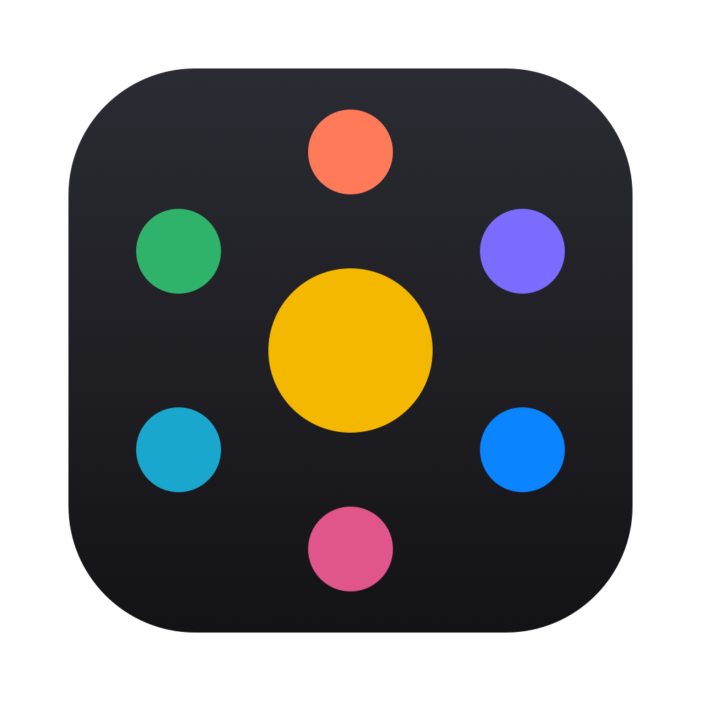

FR

mHUB
Le hub du Mac Desktop Toolkit
Une seule icône pour installer, mettre à jour et lancer toutes les applis du kit.
FR
Pourquoi un hub ?
Une seule porte d'entréeUne icône en couleur dans la barre des menus ouvre toutes les applis installées, chacune avec son sous-menu (Ouvrir, Réglages…). Les applis compatibles pourront masquer leur propre icône.
Tout le kit au même endroit31 applis présentées en une phrase, rangées par catégories, avec recherche. Installation en un clic, sans passer par GitHub.
Mises à jour centraliséesUne vérification par jour, installation automatique en option. Jamais pendant qu'une appli est ouverte : elle attend votre feu vert.
Bien intégré au systèmeApplis installées dans « Applications Personnelles », signature Developer ID vérifiée, ouverture à la session en option, 4 langues (FR, EN, ES, IT).
FR
Comment ça marche
1Un catalogue31 applis du kit avec description, catégorie et dépôt, embarqué dans mHUB et mis à jour avec lui.
2InstallerTélécharge la dernière release GitHub publique, vérifie la signature (même équipe, bon identifiant), indique si elle est notarisée, installe.
3Mettre à jourCompare les versions chaque jour. Si l'appli est ouverte : « Quitter et mettre à jour », puis relance discrète.
4Lancer et réglerOuvrir, ouvrir les réglages quand l'appli le déclare, couper ou remettre son icône de barre des menus.
EN
mHUB
The hub of the Mac Desktop Toolkit
One icon to install, update and launch every app in the toolkit.
EN
Why a hub?
One front doorA coloured menu bar icon opens every installed app, each with its own submenu (Open, Settings…). Compatible apps will be able to hide their own icon.
The whole toolkit in one place31 apps, each described in one sentence, sorted by category, with search. One-click install, no trip to GitHub.
Centralised updatesOne check per day, optional automatic install. Never while an app is open: it waits for your go-ahead.
Well integrated with macOSApps are installed in “Applications Personnelles”, Developer ID signature verified, optional open at login, 4 languages (FR, EN, ES, IT).
EN
How it works
1A catalog31 toolkit apps with description, category and repository, bundled in mHUB and updated with it.
2InstallDownloads the latest public GitHub release, verifies the signature (same team, right identifier), reports whether it is notarized, installs.
3UpdateCompares versions every day. If the app is open: “Quit and update”, then a quiet relaunch.
4Launch and configureOpen, open the app's settings when it declares them, switch its menu bar icon on or off.